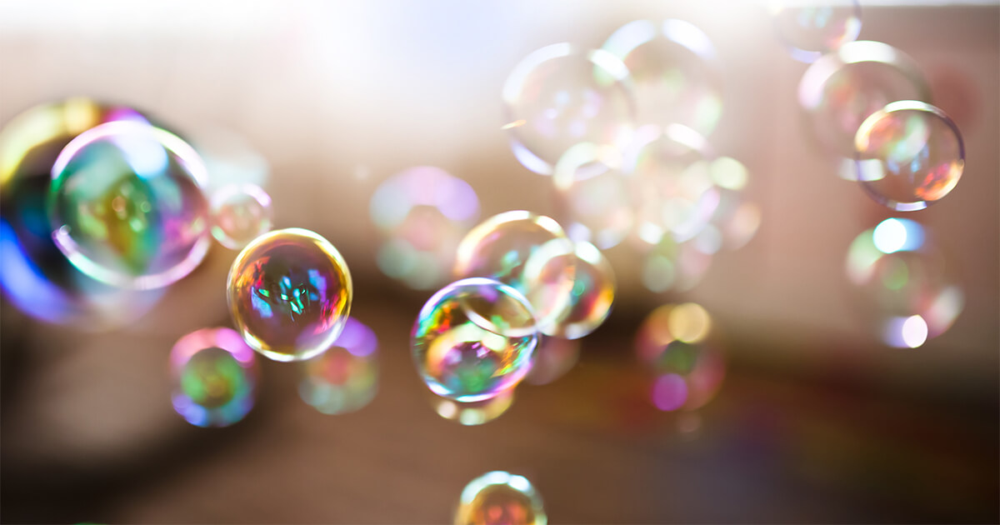

Una burbuja de jabón es una capa de líquido con dos películas muy finas de jabón y agua que forma una esfera hueca, y exhiben superficies iridiscentes. Normalmente las pompas de jabón o burbujas de jabón duran sólo unos segundos y luego estallan por sí solas o por contacto con otro objeto. A menudo se usan como objeto de juego para los niños, pero su uso en espectáculos artísticos demuestra que también pueden ser fascinantes para los adultos.
